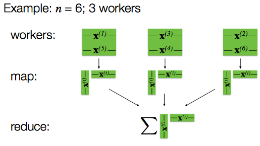

A covariance matrix(协方差矩阵, 离差矩阵) is a matrix whose element in the \(i,j\) position is the covariance between the \(i^{th}\) and \(j^{th}\) elements of a random vector(随机向量,多元随机变量). Each element of a random vector is a scalar random variable(随机变量).
Because the covariance of the \(i^{th}\) random variable with itself is simply that random variable's variance, each element on the principal diagonal of the covariance matrix is the variance of one of the random variables:
The covariance between random variables \(X, Y\):
\[\text{cov}(X,Y)=\text{E}[(X-E[X])(Y-E[Y])]\]
Then the covariance matrix \(\sum\) is the matrix whose \((i,j)\) is the covariance
\[\sum(i,j) =\text{cov}(X_i,X_j)=\text{E}[(X_i-E[X_i])(Y_i-E[Y_i])]\]
where \(X=[X_1,...,X_n]\)
Distributed Computing: Spark
Setup: Raw data \(\mathbf{P} \in \mathbb{R}^{n \times d}\)
- Step 1: Zero Mean Data \(X=\text{E}(P)\)
- Compute \(d\) feature means, \(m\in \mathbf{R}^d\)
- Communication \(m\) to all workers
- Subtract \(m\) from each data point
- Step 2: Compute Covariance Matrix \( \mathbf{C}_{\mathbf X} = \frac{1}{n} \mathbf{X}^\top \mathbf{X} \,.\)
- compute the outer product of each data point,
- add together these outer products, and divide by the number of data points

Spark Code in Python:
def estimateCovariance(data):
"""Compute the covariance matrix for a given rdd.
Args:
data (RDD of np.ndarray): An `RDD` consisting of NumPy arrays.
Returns:
np.ndarray: A multi-dimensional array where the number of rows and columns both equal the length of the arrays in the input `RDD`.
"""
mean = data.mean()
normalized = data.map(lambda x: x-mean)
return normalized.map(lambda x: np.outer(x, x)).sum()/data.count()
Reference
- Covariance matrix from wikipedia